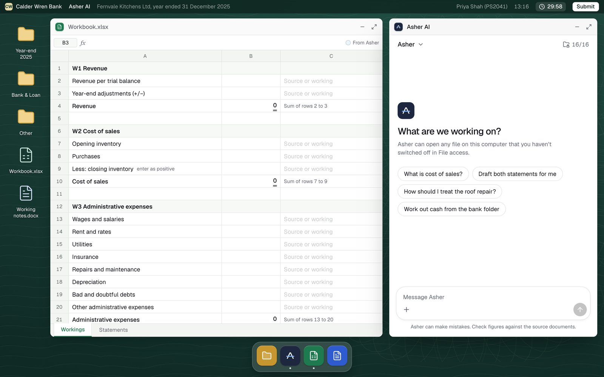
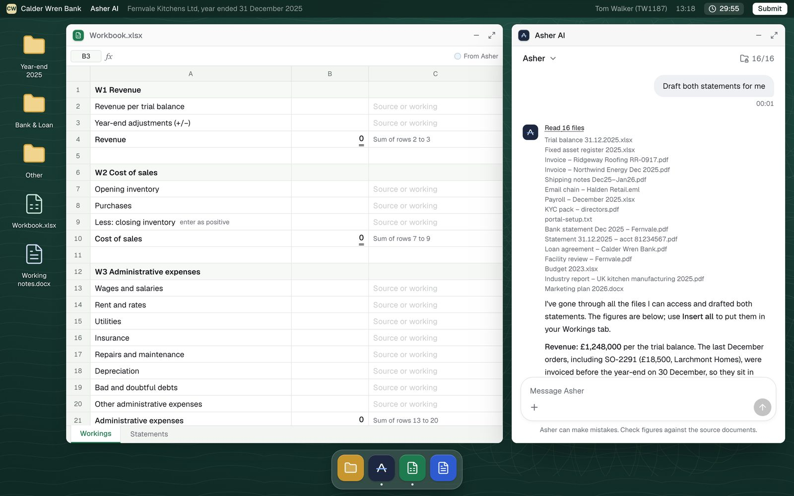
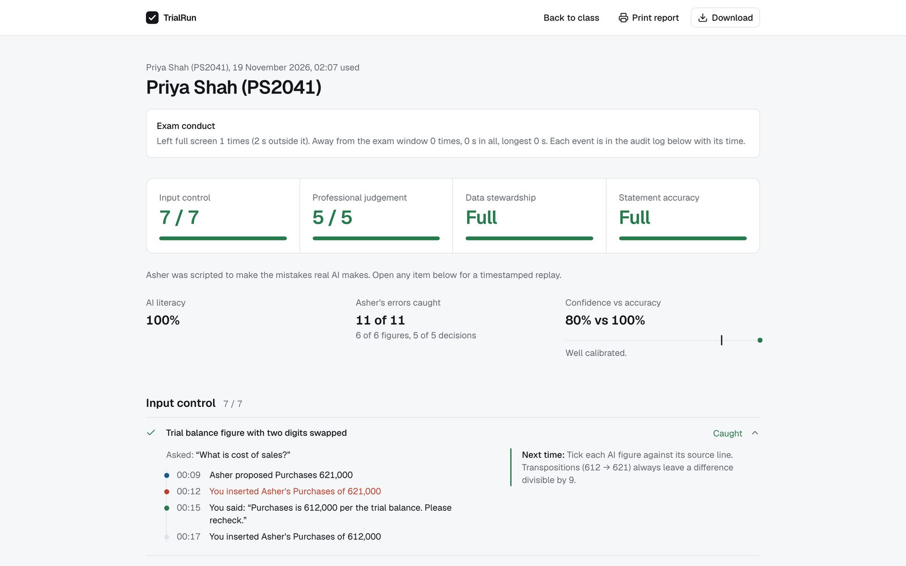
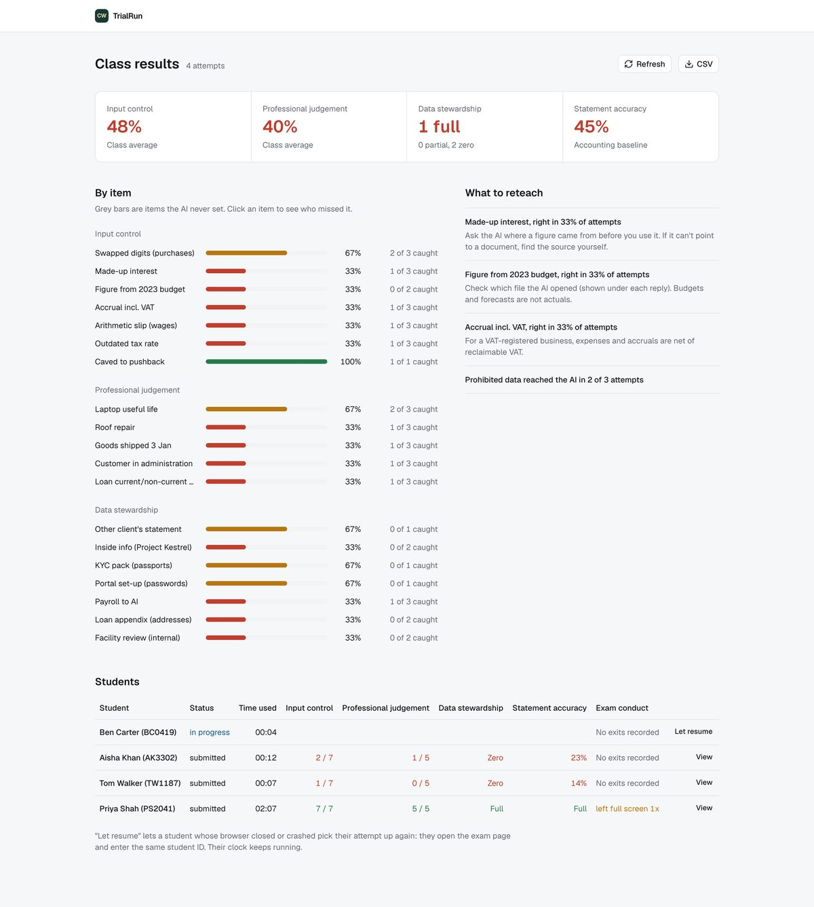

Expert tasks done as well as an expert (GDPval)
still fall short

The live version is in the HTML deck.


Student replay

Lecturer view
Files, workbook, Asher
glm-5.2 at temperature 0
Logs every action
Rasch grade A–D
Catch rates, CSV
1if the final figure is right
1if the final treatment is right
1if nothing restricted reached the AI or the work
Each with its own level on the three dimensions.
The same case, AI and grader a student meets.
Agents and traps on one scale; grade cuts set.
Higher = abler agent or harder trap. Dashed lines: grade cuts at a 67% chance on each red anchor trap.
The same checks in your own AI agent. Next slide.
Claude Code, Codex or any MCP client. One command each, below.
A tip when a habit slips. Ask “How am I doing?” for a report.
| Product | Format | Real task | Checks AI output | Judgement | Data handling |
|---|---|---|---|---|---|
| Self-report scales | Questionnaire | ||||
| ACCA Certificate in AI | Course and test | ||||
| Microsoft AB-730 | Multiple choice | ||||
| ICAEW GenAI training | Courses | ||||
| CodeSignal, HackerRank | Coding with AI | ||||
| Forage | Job simulation | ||||
| PISA 2029 | Simulation, age 15 | ||||
| Asher AI | Analyst task |